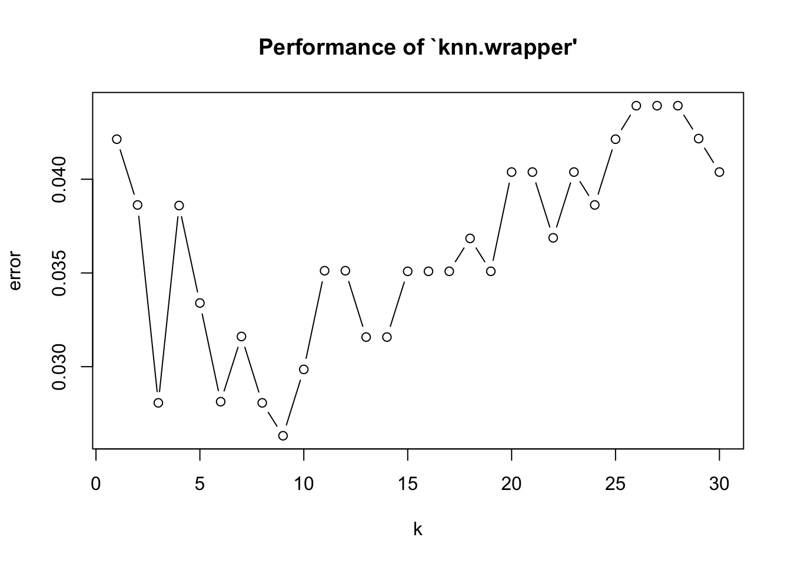
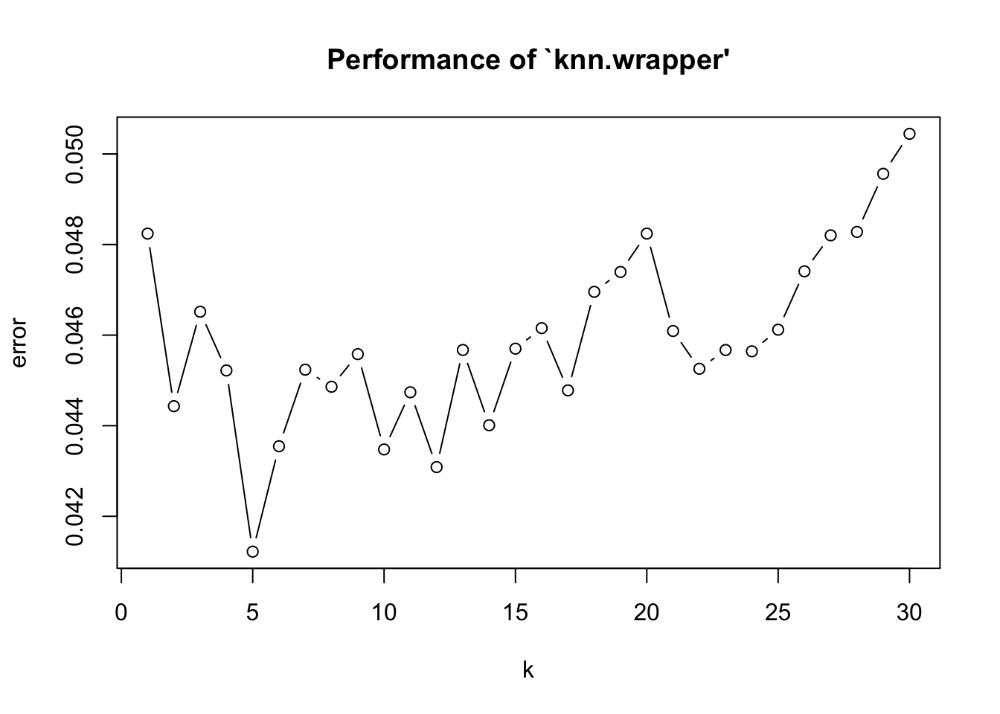

Le principe de l’algorithme des k plus proches voisins est basé le fait que les objets d’un même type sont “proches” entre eux. Pour quantifier la distance entre les objets, la grandeur couramment utilisée est la distance euclidienne.
L’algorithme permet ainsi de prédire l’appartenance d’un nouvel objet à une classe en fonction de ses distances avec ses voisins : elle appartiendra à la classe majoritaire de ses voisins.
Comme on calcule des distances euclidienne, la version de base suppose que les varibles sont numériques. Pour que l’échelle des valeurs numériques des différentes variables n’impactent pas le calcul de la distance, les valeurs doivent être normalisées.
Il est toujours possible d’avoir des variables catégoriques, mais on doit alors définir la notion de distance.
Cet algorithme ne construit un modèle. En entrée, on doit disposer d’une base de données libelées. Ensuite, pour chacune des nouvelles observations, on calcule les distances avec les voisins. Comme son nom l’indique, le nombre de voisin est un paramtère de l’algorithme. L’apprentissage automatique consiste à optimiser ce paramètre.
La base de données sur le diagnostic des cancers du sein peut illustrer cet algorithme. les données utilisées regroupent les observations des caractéristiques des cellules des seins. Elles sont disponibles sur le site de UCI,
On a 30 variables prédictives et une variable à prédire :
## [1] "radius_mean" "texture_mean"
## [3] "perimeter_mean" "area_mean"
## [5] "smoothness_mean" "compactness_mean"
## [7] "concavity_mean" "concave.points_mean"
## [9] "symmetry_mean" "fractal_dimension_mean"
## [11] "radius_se" "texture_se"
## [13] "perimeter_se" "area_se"
## [15] "smoothness_se" "compactness_se"
## [17] "concavity_se" "concave.points_se"
## [19] "symmetry_se" "fractal_dimension_se"
## [21] "radius_worst" "texture_worst"
## [23] "perimeter_worst" "area_worst"
## [25] "smoothness_worst" "compactness_worst"
## [27] "concavity_worst" "concave.points_worst"
## [29] "symmetry_worst" "fractal_dimension_worst"
## [31] "class"La variable à prédire prend la valeur “B” qui signifie bénigne, et “M” qui signifie maligne.
##
## B M
## 357 212## radius_mean texture_mean perimeter_mean area_mean smoothness_mean
## 1 17.99 10.38 122.80 1001.0 0.11840
## 2 20.57 17.77 132.90 1326.0 0.08474
## 3 19.69 21.25 130.00 1203.0 0.10960
## 4 11.42 20.38 77.58 386.1 0.14250
## 5 20.29 14.34 135.10 1297.0 0.10030
## 6 12.45 15.70 82.57 477.1 0.12780
## compactness_mean concavity_mean concave.points_mean symmetry_mean
## 1 0.27760 0.3001 0.14710 0.2419
## 2 0.07864 0.0869 0.07017 0.1812
## 3 0.15990 0.1974 0.12790 0.2069
## 4 0.28390 0.2414 0.10520 0.2597
## 5 0.13280 0.1980 0.10430 0.1809
## 6 0.17000 0.1578 0.08089 0.2087
## fractal_dimension_mean radius_se texture_se perimeter_se area_se
## 1 0.07871 1.0950 0.9053 8.589 153.40
## 2 0.05667 0.5435 0.7339 3.398 74.08
## 3 0.05999 0.7456 0.7869 4.585 94.03
## 4 0.09744 0.4956 1.1560 3.445 27.23
## 5 0.05883 0.7572 0.7813 5.438 94.44
## 6 0.07613 0.3345 0.8902 2.217 27.19
## smoothness_se compactness_se concavity_se concave.points_se symmetry_se
## 1 0.006399 0.04904 0.05373 0.01587 0.03003
## 2 0.005225 0.01308 0.01860 0.01340 0.01389
## 3 0.006150 0.04006 0.03832 0.02058 0.02250
## 4 0.009110 0.07458 0.05661 0.01867 0.05963
## 5 0.011490 0.02461 0.05688 0.01885 0.01756
## 6 0.007510 0.03345 0.03672 0.01137 0.02165
## fractal_dimension_se radius_worst texture_worst perimeter_worst
## 1 0.006193 25.38 17.33 184.60
## 2 0.003532 24.99 23.41 158.80
## 3 0.004571 23.57 25.53 152.50
## 4 0.009208 14.91 26.50 98.87
## 5 0.005115 22.54 16.67 152.20
## 6 0.005082 15.47 23.75 103.40
## area_worst smoothness_worst compactness_worst concavity_worst
## 1 2019.0 0.1622 0.6656 0.7119
## 2 1956.0 0.1238 0.1866 0.2416
## 3 1709.0 0.1444 0.4245 0.4504
## 4 567.7 0.2098 0.8663 0.6869
## 5 1575.0 0.1374 0.2050 0.4000
## 6 741.6 0.1791 0.5249 0.5355
## concave.points_worst symmetry_worst fractal_dimension_worst class
## 1 0.2654 0.4601 0.11890 M
## 2 0.1860 0.2750 0.08902 M
## 3 0.2430 0.3613 0.08758 M
## 4 0.2575 0.6638 0.17300 M
## 5 0.1625 0.2364 0.07678 M
## 6 0.1741 0.3985 0.12440 MOn peut normaliser les valeurs à l’aide la fonction suivante :
Ainsi toutes les variables prennent des valeurs de 0 à 1 :
## radius_mean texture_mean perimeter_mean area_mean
## Min. :0.0000 Min. :0.0000 Min. :0.0000 Min. :0.0000
## 1st Qu.:0.2233 1st Qu.:0.2185 1st Qu.:0.2168 1st Qu.:0.1174
## Median :0.3024 Median :0.3088 Median :0.2933 Median :0.1729
## Mean :0.3382 Mean :0.3240 Mean :0.3329 Mean :0.2169
## 3rd Qu.:0.4164 3rd Qu.:0.4089 3rd Qu.:0.4168 3rd Qu.:0.2711
## Max. :1.0000 Max. :1.0000 Max. :1.0000 Max. :1.0000
## smoothness_mean compactness_mean concavity_mean concave.points_mean
## Min. :0.0000 Min. :0.0000 Min. :0.00000 Min. :0.0000
## 1st Qu.:0.3046 1st Qu.:0.1397 1st Qu.:0.06926 1st Qu.:0.1009
## Median :0.3904 Median :0.2247 Median :0.14419 Median :0.1665
## Mean :0.3948 Mean :0.2606 Mean :0.20806 Mean :0.2431
## 3rd Qu.:0.4755 3rd Qu.:0.3405 3rd Qu.:0.30623 3rd Qu.:0.3678
## Max. :1.0000 Max. :1.0000 Max. :1.00000 Max. :1.0000
## symmetry_mean fractal_dimension_mean radius_se
## Min. :0.0000 Min. :0.0000 Min. :0.00000
## 1st Qu.:0.2823 1st Qu.:0.1630 1st Qu.:0.04378
## Median :0.3697 Median :0.2439 Median :0.07702
## Mean :0.3796 Mean :0.2704 Mean :0.10635
## 3rd Qu.:0.4530 3rd Qu.:0.3404 3rd Qu.:0.13304
## Max. :1.0000 Max. :1.0000 Max. :1.00000
## texture_se perimeter_se area_se smoothness_se
## Min. :0.0000 Min. :0.00000 Min. :0.00000 Min. :0.0000
## 1st Qu.:0.1047 1st Qu.:0.04000 1st Qu.:0.02064 1st Qu.:0.1175
## Median :0.1653 Median :0.07209 Median :0.03311 Median :0.1586
## Mean :0.1893 Mean :0.09938 Mean :0.06264 Mean :0.1811
## 3rd Qu.:0.2462 3rd Qu.:0.12251 3rd Qu.:0.07170 3rd Qu.:0.2187
## Max. :1.0000 Max. :1.00000 Max. :1.00000 Max. :1.0000
## compactness_se concavity_se concave.points_se symmetry_se
## Min. :0.00000 Min. :0.00000 Min. :0.0000 Min. :0.0000
## 1st Qu.:0.08132 1st Qu.:0.03811 1st Qu.:0.1447 1st Qu.:0.1024
## Median :0.13667 Median :0.06538 Median :0.2070 Median :0.1526
## Mean :0.17444 Mean :0.08054 Mean :0.2235 Mean :0.1781
## 3rd Qu.:0.22680 3rd Qu.:0.10619 3rd Qu.:0.2787 3rd Qu.:0.2195
## Max. :1.00000 Max. :1.00000 Max. :1.0000 Max. :1.0000
## fractal_dimension_se radius_worst texture_worst perimeter_worst
## Min. :0.00000 Min. :0.0000 Min. :0.0000 Min. :0.0000
## 1st Qu.:0.04675 1st Qu.:0.1807 1st Qu.:0.2415 1st Qu.:0.1678
## Median :0.07919 Median :0.2504 Median :0.3569 Median :0.2353
## Mean :0.10019 Mean :0.2967 Mean :0.3640 Mean :0.2831
## 3rd Qu.:0.12656 3rd Qu.:0.3863 3rd Qu.:0.4717 3rd Qu.:0.3735
## Max. :1.00000 Max. :1.0000 Max. :1.0000 Max. :1.0000
## area_worst smoothness_worst compactness_worst concavity_worst
## Min. :0.00000 Min. :0.0000 Min. :0.0000 Min. :0.00000
## 1st Qu.:0.08113 1st Qu.:0.3000 1st Qu.:0.1163 1st Qu.:0.09145
## Median :0.12321 Median :0.3971 Median :0.1791 Median :0.18107
## Mean :0.17091 Mean :0.4041 Mean :0.2202 Mean :0.21740
## 3rd Qu.:0.22090 3rd Qu.:0.4942 3rd Qu.:0.3025 3rd Qu.:0.30583
## Max. :1.00000 Max. :1.0000 Max. :1.0000 Max. :1.00000
## concave.points_worst symmetry_worst fractal_dimension_worst
## Min. :0.0000 Min. :0.0000 Min. :0.0000
## 1st Qu.:0.2231 1st Qu.:0.1851 1st Qu.:0.1077
## Median :0.3434 Median :0.2478 Median :0.1640
## Mean :0.3938 Mean :0.2633 Mean :0.1896
## 3rd Qu.:0.5546 3rd Qu.:0.3182 3rd Qu.:0.2429
## Max. :1.0000 Max. :1.0000 Max. :1.0000Pour tester l’algorithme, on répartit les données en deux bases : base d’apprentissage et base de test.
## [1] 172 31## [1] 397 31On peut faire la prédiction des classes de la base de test à l’aide la fonction knn du package class. On peut choisir dans un premier temps k=5.
On peut construire la matrice de confusion avec la fonction table :
##
## pred B M
## B 243 8
## M 6 140ou utiliser la fonction confusionMatrix qui permet de calculer automatiquement certains caractéristiques :
## Confusion Matrix and Statistics
##
## Reference
## Prediction B M
## B 243 8
## M 6 140
##
## Accuracy : 0.9647
## 95% CI : (0.9415, 0.9806)
## No Information Rate : 0.6272
## P-Value [Acc > NIR] : <2e-16
##
## Kappa : 0.9244
## Mcnemar's Test P-Value : 0.7893
##
## Sensitivity : 0.9759
## Specificity : 0.9459
## Pos Pred Value : 0.9681
## Neg Pred Value : 0.9589
## Prevalence : 0.6272
## Detection Rate : 0.6121
## Detection Prevalence : 0.6322
## Balanced Accuracy : 0.9609
##
## 'Positive' Class : B
## Le surapprentissage est le cas où l’algorithme fonctionne presque parfaitement pour la base d’apprentissage, mais le résultat est détérioré pour la base de test.
On peut par exemple choisir k=1 pour faire la prédiction sur la base d’apprentissage. La prédiction sera 100% correcte.
## Confusion Matrix and Statistics
##
## Reference
## Prediction B M
## B 108 0
## M 0 64
##
## Accuracy : 1
## 95% CI : (0.9788, 1)
## No Information Rate : 0.6279
## P-Value [Acc > NIR] : < 2.2e-16
##
## Kappa : 1
## Mcnemar's Test P-Value : NA
##
## Sensitivity : 1.0000
## Specificity : 1.0000
## Pos Pred Value : 1.0000
## Neg Pred Value : 1.0000
## Prevalence : 0.6279
## Detection Rate : 0.6279
## Detection Prevalence : 0.6279
## Balanced Accuracy : 1.0000
##
## 'Positive' Class : B
## Cependant, si on applique ce paramètre pour la base de test, la précision de prédiction baisse :
## Confusion Matrix and Statistics
##
## Reference
## Prediction B M
## B 242 7
## M 7 141
##
## Accuracy : 0.9647
## 95% CI : (0.9415, 0.9806)
## No Information Rate : 0.6272
## P-Value [Acc > NIR] : <2e-16
##
## Kappa : 0.9246
## Mcnemar's Test P-Value : 1
##
## Sensitivity : 0.9719
## Specificity : 0.9527
## Pos Pred Value : 0.9719
## Neg Pred Value : 0.9527
## Prevalence : 0.6272
## Detection Rate : 0.6096
## Detection Prevalence : 0.6272
## Balanced Accuracy : 0.9623
##
## 'Positive' Class : B
## On peut utiliser la validation croisée pour tester les différentes valeurs de k :
##
## Parameter tuning of 'knn.wrapper':
##
## - sampling method: 10-fold cross validation
##
## - best parameters:
## k
## 9
##
## - best performance: 0.02631579
##
## - Detailed performance results:
## k error dispersion
## 1 1 0.04213659 0.02215308
## 2 2 0.03862782 0.02153241
## 3 3 0.02807018 0.01885908
## 4 4 0.03859649 0.02453354
## 5 5 0.03339599 0.02101059
## 6 6 0.02813283 0.01482859
## 7 7 0.03161028 0.02154375
## 8 8 0.02807018 0.02368241
## 9 9 0.02631579 0.01894953
## 10 10 0.02985589 0.02344678
## 11 11 0.03511905 0.02740724
## 12 12 0.03511905 0.02185333
## 13 13 0.03157895 0.02309756
## 14 14 0.03157895 0.02309756
## 15 15 0.03508772 0.02864900
## 16 16 0.03508772 0.02742933
## 17 17 0.03508772 0.02864900
## 18 18 0.03684211 0.02798476
## 19 19 0.03508772 0.03094446
## 20 20 0.04038221 0.02618803
## 21 21 0.04038221 0.02618803
## 22 22 0.03687343 0.02670985
## 23 23 0.04038221 0.02618803
## 24 24 0.03862782 0.02715203
## 25 25 0.04213659 0.02638087
## 26 26 0.04392231 0.02771796
## 27 27 0.04392231 0.02771796
## 28 28 0.04392231 0.02771796
## 29 29 0.04216792 0.02639532
## 30 30 0.04038221 0.02746289
On peut également faire du rééchantillonage :
##
## Parameter tuning of 'knn.wrapper':
##
## - sampling method: bootstrapping
##
## - best parameters:
## k
## 18
##
## - best performance: 0.03650283
##
## - Detailed performance results:
## k error dispersion
## 1 1 0.04960789 0.015107817
## 2 2 0.05348363 0.011109256
## 3 3 0.05208932 0.008737733
## 4 4 0.04957252 0.009409546
## 5 5 0.04610232 0.008329064
## 6 6 0.04346277 0.012137074
## 7 7 0.04603357 0.009176791
## 8 8 0.04518929 0.011854109
## 9 9 0.04212783 0.012025564
## 10 10 0.04162343 0.016869806
## 11 11 0.04207488 0.011680170
## 12 12 0.03949031 0.012869472
## 13 13 0.03778166 0.012741881
## 14 14 0.03863843 0.014347384
## 15 15 0.03774253 0.015652926
## 16 16 0.03999183 0.015707999
## 17 17 0.03867353 0.015721628
## 18 18 0.03650283 0.013962684
## 19 19 0.03740534 0.013323598
## 20 20 0.03869368 0.014909679
## 21 21 0.03870145 0.016603848
## 22 22 0.03827971 0.014478321
## 23 23 0.03867127 0.017811421
## 24 24 0.03863700 0.017872025
## 25 25 0.03772459 0.017179507
## 26 26 0.03912892 0.016219015
## 27 27 0.03864633 0.017912216
## 28 28 0.04091349 0.019470388
## 29 29 0.04132093 0.018204135
## 30 30 0.04215857 0.018338582
On ne constate pas une unique valeur de k pour laquelle le taux d’erreurs est le plus bas. Les valeurs entre 5 et 15 semblent toutes pertinentes.
Copyright © 2016 Blog de Kezhan Shi